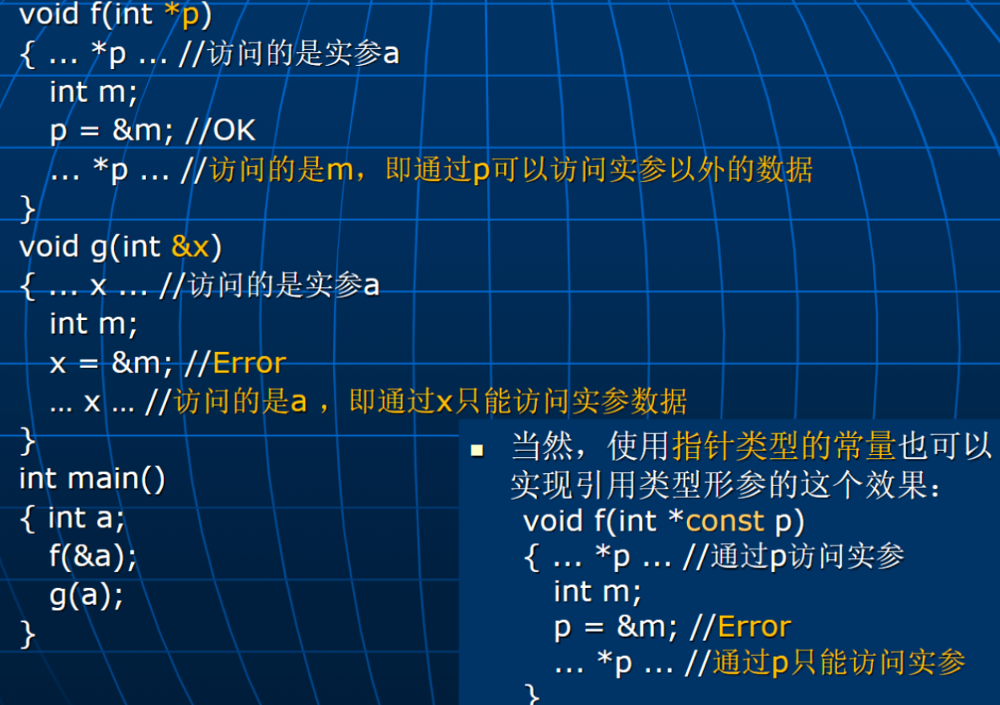
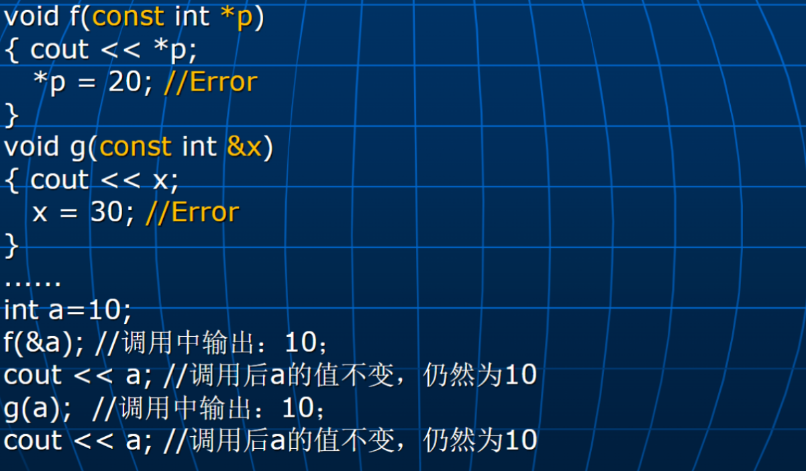
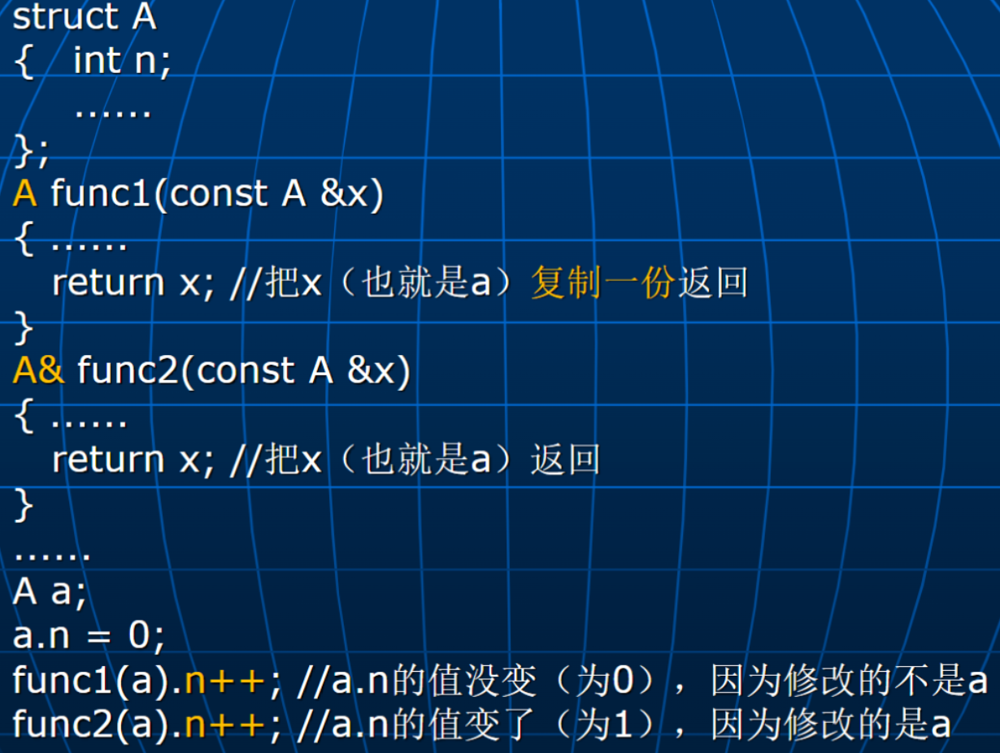
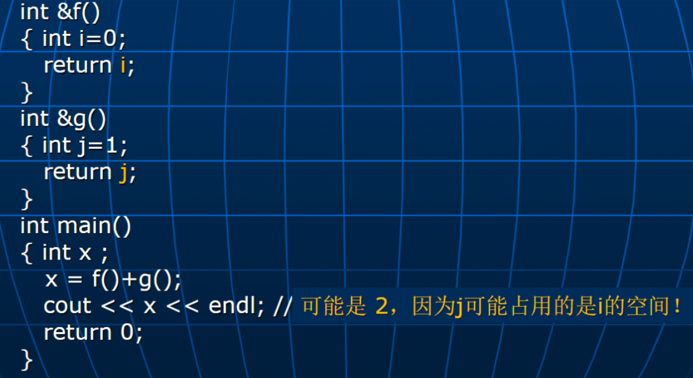

C++高级程序设计-0-Introduction
[!tip]+ 考核
作业 10% + 上机 25% + 项目 15% + 期末 50%
预备知识
函数的副作用
指在函数执行过程中，除了返回值之外，对外部状态或环境产生的影响。这些影响可能包括：
- 修改全局变量：函数可能会改变全局作用域中的变量值。
- 修改参数：如果参数是可变对象（如列表或字典），函数可能会直接修改这些对象。
- 输入/输出操作：函数可能会进行文件读写、打印输出等操作。
- 抛出异常：函数可能会引发异常，影响程序的控制流。
- 网络请求：函数可能会进行网络请求，改变外部系统的状态。
副作用的存在使得函数的行为不再是完全可预测的，因为相同的输入可能导致不同的输出，具体取决于函数执行时的外部状态。这与“纯函数”相对，后者在相同输入下总是返回相同的输出，并且不产生副作用。
数据类型-联合
1 | |
特点
- 内存节省：由于所有成员共享同一内存，联合的大小等于其最大成员的大小。
- 只能存储一个值：在任何时刻，联合只能存储一个成员的值，设置一个成员的值会覆盖其他成员的值。
- 类型安全：使用联合时，程序员需要小心，以确保在访问联合成员时，所访问的成员是最近设置的成员。
数据类型-枚举
1 | |
必须用指针的情况：
- 提高参数传递效率（直接传递地址，不用形参）
- 访问动态变量
static 的使用：
1 | |
1 | |
C++对 C 的扩充
内联函数
宏定义的不足：
- 需要加上很多括号
- 有时会出现重复计算
- 替换时不进行参数类型检查和转换
内联函数：
1 | |
建议编译程序把该函数的函数体展开到调用点，函数调用时直接执行函数体。
P.S 递归函数往往不能作为内联函数；内联函数名具有文件作用域
名空间作用域
- 把全局标识符定义在一个名空间中，其作用域为该名空间。
- 当在一个名空间外部需要使用该名空间中定义的全局标识符时，需要用该名空间的名字来修饰或受限。
动态变量
p1 = new int;
delete p1;
对于普通的动态变量，C++与 C 的做法区别不大，但如果创建的是动态对象，则两者是有差别的：
- 除了为对象分配空间外，new 还会去调用对象类的构造函数进行对象初始化， malloc（calloc）则否。
- 除了收回为对象分配的空间外，delete 还会去调用对象类的析构函数进行对象消亡后的清理，free 则否。
C/C++动态变量的问题
- 没有自动废区收集功能，动态变量需要程序显式用 free 或 delete 撤销，否则会出现内存泄漏问题！
引用类型
1 | |
用处
提高函数参数传递效率
1 | |
保证形参访问的永远是实参数据
保证通过形参访问的永远是实参数据

[!note]
即通过引用类型不可以在函数体内指向其他位置，而普通指针可以（但可以通过 const 达到引用类型的效果
如何防止函数通过指针和引用类型的形参修改实参数据
const

函数返回值可以为引用类型

[!warning]+
不要把局部量的引用返回给调用者，因为函数返回后，局部量的内存空间已无效，后续操作中可能又分配给其它变量

函数名重载
[!quote]+ 定义
在相同的作用域中，可以用同一个名字定义多个不同的函数，这时，要求定义的这些函数应具有不同的参数（参数个数或类型要有所不同）。
绑定
定义：确定一个对重载函数的调用对应着哪一个重载函数定义的过程
精确匹配
实参与形参的类型完全相同，或者对实参进行“微小”的类型转换后与形参类型相同：
- 数组变量名->数组第一个元素的内存地址
- 函数名->函数的内存首地址
提升匹配
先对实参进行下面的类型提升，然后进行精确匹配：
- 按整型提升规则提升实参类型
- 把 float 类型实参提升到 double
- 把 double 类型实参提升到 long double
标准转换匹配
先进行下面的标准转换，然后进行精确匹配：
- 任何算术类型可以互相转换
- 枚举类型可以转换成任何算术类型
- 零可以转换成任何算术类型或指针类型
- 任何类型的指针可以转换成 void *
[!warning]+
每个标准转换都是平等的，不存在哪个优先：
如果存在多个标准转换后能精确匹配，则失败！ （具有歧义）
绑定失败
不存在匹配 or 存在多个匹配
解决办法是：
- 对实参进行显式类型转换，如，
- print ((char) 1) 或 print ((double) 1)
- 增加额外的重载，如，
- 增加一个重载函数定义： void print (int);
变量初始化
1 | |
基于范围的 for
C++语言注重程序的效率，运行时刻不对数组元素下标越界进行检查，从而造成下面错误代码的执行不会报错
1 | |
为了方便、可靠地实现一些简单地对一维数组元素进行遍历的操作，在 C++新国际标准（C++11 以后）中提供了一种基于范围的 for 语句，它能自动遍历数组元素。
1 | |
类型自动判断：auto
定义一个变量时可以不指定它的类型，由编译器根据初始化的值自动确定它的类型。例如：
- auto x=1+2 * 3.4; //编译程序自动确定 x 的类型为 double
P.S: 自动生存期的局部变量不能再显式地用 auto 来指出
字符串常量与字符指针
- 按 C 语言，可以；按 C++语言，不可以！
1 | |
[!warning]+
C++需要指向常量的指针
即使用 const char *p = “abcd” 或者 f (const char *p) 是可以的